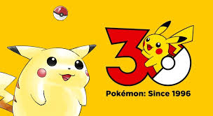

Pokémon Iniciales
Noticias destacadas

El fenómeno Pokémon
Desde su lanzamiento en 1996, Pokémon se ha convertido en una de las franquicias más exitosas del mundo.

Región Kanto
Kanto fue la primera región presentada en los juegos Pokémon Red y Blue. Esta es la primera región en la que vivimos nuestra aventura

Los Pokémon iniciales
Bulbasaur, Charmander y Squirtle fueron los primeros Pokémon iniciales disponibles. Representan una elección llena de nostalgia.
Artículos recientes
La evolución de los videojuegos Pokémon
Desde los clásicos juegos de Game Boy hasta los títulos modernos en Nintendo Switch, Pokémon ha evolucionado manteniendo su esencia de exploración y captura.
El impacto del anime Pokémon
El anime protagonizado por Ash Ketchum ayudó a expandir la popularidad de Pokémon en todo el mundo.
Curiosidades Pokémon
- Pikachu fue elegido como mascota oficial de Pokémon.
- El nombre Pokémon proviene de "Pocket Monsters".
- Kanto está inspirado en una región real de Japón.
- Mew fue uno de los Pokémon secretos en los primeros juegos.
- Pokémon es una de las franquicias más lucrativas de la historia.